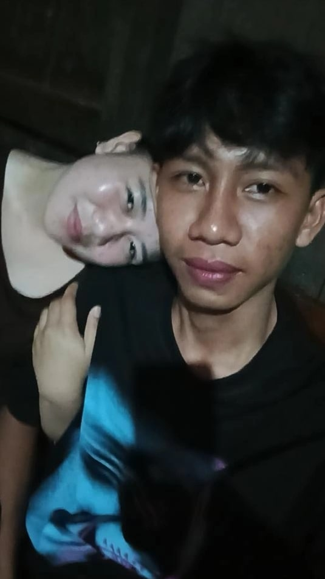

⚡ FUTURE TECH AI SYSTEM

TAMARA SARI, wanita tercantik
Sistem AI futuristik yang membantu kamu membuat konten, menganalisis data, dan membangun teknologi cerdas dengan tampilan modern.
Mulai Sekarang
🔥 Fitur Teknologi
🤖 AI Cerdas Real-Time
⚡ Kecepatan Ultra Cepat
🔐 Keamanan Sistem Tingkat Tinggi
🌌 Tampilan Futuristik Premium